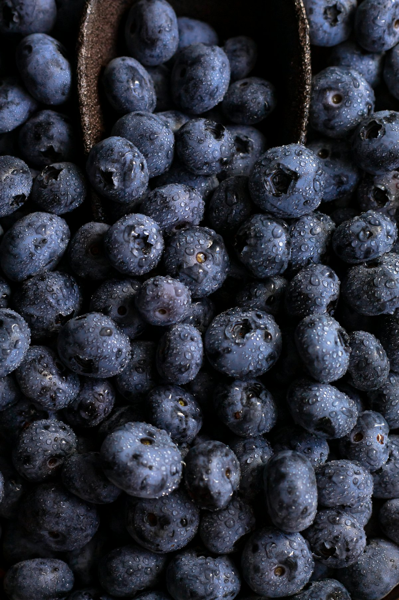
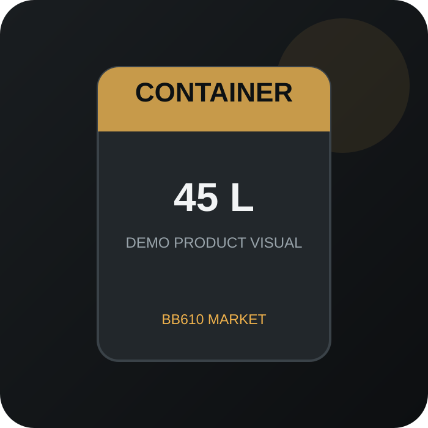

BB610 MARKET / PROFESSIONAL GROWING SUPPLIES
ПРОФЕСІЙНІ РІШЕННЯ
ДЛЯ ВИРОЩУВАННЯ
Добрива, біостимулятори та професійні товари для вирощування рослин
BB610 VERIFIEDПеревірене походження та джерело даних
ДАНІ ВИРОБНИКАБез агрономічних прикрас. Тільки факти
ДНІПРО · УКРАЇНАЛокальна наявність та швидка відправка


КАТАЛОГ
Популярні товари
PRODUCT DATA: основні характеристики товарів у цій версії внесені з офіційних джерел виробників. Ціна, наявність, фасовка BB610, імпортер/фасувальник та постачальник не вигадуються і показуються як «уточнюється», доки не будуть підтверджені.
BB610 MARKET · ГОРЩИКИ
Професійні горщики для ягідних культур
Plantlogic — у форматі передзамовлення та запиту ціни. Оберіть потрібну модель і надішліть запит на актуальні умови постачання.
Переглянути горщики →
